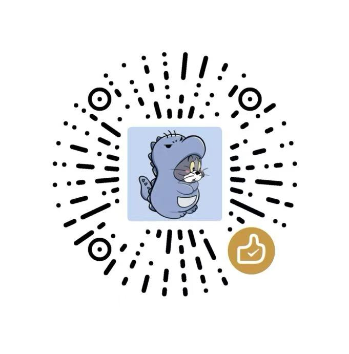

FC
FinalComic
漫画格式转换工具
[+] 输入文件夹路径
浏览
勾选输出的格式
✕
EPUB
源格式，自动包含
✓
PDF
自动切边 + 画质增强
✓
MOBI
Kindle 经典格式
✓
KFX
Kindle 最新格式 · 固定版式
设置选项
翻页方向
LTR
RTL
墨色加深
(KFX 有效)
ON
ON
转换进度
0%
准备就绪，选择文件夹开始转换。
[>>] 开始转换
首次使用需要下载一个转换引擎
点下方按钮下载
下载引擎 (Windows)
网站完全免费，如果您觉得恰好对您有所帮助，可以扫码支持一下谢谢~

微信
支付宝